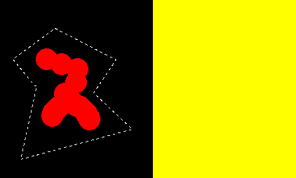
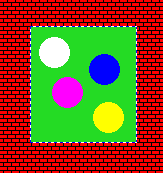
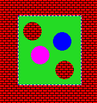
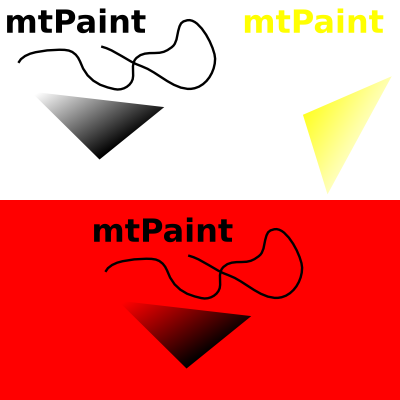
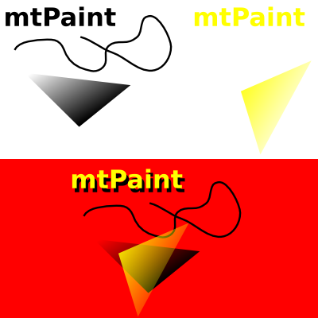
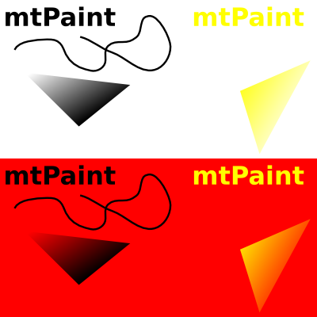

Nástroj výbìru se pou¾ívá pro vyznaèení oblastí na plátnì. Jakmile jsou tyto oblasti definovány, tak mù¾ete provádìt rùzné operace, jako vyplòování, kreslení obrysu, nebo kopírování a vkládání. Tyto operace jsou pøístupné pøes menu Výbìr, nebo na nástrojové li¹tì. V menu Upravit jsou volby vyjmutí a vkládání.
Funkce kopírování mù¾e být skvìle vylep¹ena s pou¾itím výbìru kanálù, co¾ vám umo¾ní specifikovat, které pixely budou zkopírovány. Napøíklad je mo¾né kopírovat a vkládat eliptické tvary. Pro více informací se podívejte na kapitolu kanály a pøíklady, jak to pracuje.
Pravoúhlý výbìr se provádí kliknutím na plátno a následným ta¾ením kurzoru z jednoho rohu do druhého. Celý obrázek oznaèíte stiskem Ctrl-A. Pro zru¹ení oznaèení stisknìte Escape, pravé tlaèítko my¹i, Ctrl+Shift-A, nebo pou¾ijte menu Upravit. Oznaèovací box mù¾ete posunovat po pixelech pomocí kláves ¹ipek. Stiskem klávesy Shift a kurzorové klávesy mù¾ete oznaèenou oblast posunovat o pøeddefinovaný poèet pixelù nastavení v oknì voleb. Po té co provedete výbìr, mù¾ete kliknout a posunovat rohy do nových pozic. Se zapnutým kurzorem my¹i jako nástroj uvidíte odpovídající rohovou ¹ipku indikující tuto novou vlastnost.
Po vybrání tohoto nástroje kliknìte levým tlaèítkem na plátno, kde chcete zaèít formovat tvar polygonu. Potom mù¾ete také podr¾et levé tlaèítko my¹i pro volné kreslení, nebo ho uvolnit pro dlouhou rovnou hranu. Práci dokonèíte pravým tlaèítkem my¹i. Mù¾ete také vytvoøit polygon dr¾ením pravého tlaèítka a následným posunováním kurzoru. V tomto pøípadì uvolnìním pravého tlaèítka polygon dokonèíte. Výbìr zru¹íte stiskem klávesy Escape.
Kdy¾ dokonèíte výbìr pomocí polygonu, tak mù¾ete pou¾ít nástroj Laso pro zmen¹ení hran okolo výbìru se stejnou barvou. Tato funkce pracuje vyplnìním transparentních pixelù od prvního bodu polygonového výbìru, nebo z levého horního rohu obdélníkového výbìru. Napøíklad:


V menu Výbìr najdete také funkci 'Vyjmout lasem', která vyplní oblast na plátnì vybranou lasem.
Bìhem vkládání výbìru mù¾ete udìlat nìkteré barvy ve výbìru neviditelné. Napøíklad:


Toto mù¾ete provést s kolika barvami budete chtít, prostì jen opakujte stejnou proceduru. Zvolením Výbìr->Zru¹it Masku zru¹íte celou masku.
Normální kopírování a vkládání zahrnuje kopírování samotných pixelù z jednoho místa na jiné. Nicménì je mo¾né pou¾ít alfa kanál pro jemnìj¹í smíchání urèitých oblastí. Napøíklad zde máme holý RGB obrázek, který byl exportován z programu Inkscape, který obsahuje více jemnìj¹ích hran a barevné pøechody:

Pokud pou¾iji laso na objekty a vlo¾ím je pøes èervené pozadí, bude to vypadat asi takto:

jak mù¾ete vidìt, vypadají hrany objektù o¹klivì a pøechody vypadají mimo mísu. V mtPaintu je funkce, která vám umo¾ní extrahovat pøechodové informace výbìru a aplikovat je na pozadí se zachováním jemného pøechodu. Jako pøíklad pou¾ijte první obrázek nahoøe a zaènìte:
Nyní byste mìli vidìt toto:


Tato technika pracuje na jakékoliv jednoduché pøechody z jedné barvy do druhé. Pracuje skvìle s antialiasingem, který se vyskytuje kolem textu a geometrických objektù vytvoøených programy jako Inkscape, které jsou exportovány do bezeztrátového formátu jako PNG. Obrázky z programu Inkscape se musí exportovat s jednobarevným pozadím, nikoliv prùhledným pozadím.
Pokud máte barvy A a B jako stejnou barvu, mù¾ete tuto barvu pøepnout do alfa kanálu pøi výbìru a smíchat ostatní barvy do alfa stínù. Napøíklad, pokud si vezmete obrázek nahoøe jako pøíklad, zkopírujete horní èást, nastavíte barvy A a B jako èistì bílou a potom vlo¾íte výsledek po aplikaci "Výbìr->Alfa pøechod mezi A,B", tak dostanete takovýto výsledek:

Tato metoda pracuje skvìle, pokud má zdroj jednobarevné pozadí s mnoha barvami totálnì odli¹ného typu.
mtPaint umo¾òuje ulo¾it a¾ 12 obrázkù do více obrazových schránek. PNG obrázky se ulo¾í do schránky a následnì se mohou v menu Upravit otevøít dle potøeby.
Tato funkce také znamená, ¾e mù¾ete mít dva bì¾ící nezávislé mtPainty a jste schopni mezi nimi vymìòovat data ze schránky stiskem tlaèítka. Vzhledem k tomu, ¾e se soubory nema¾ou, mù¾ete se dostat do tìchto obrazových schránek po uzavøení a restartování mtPaint, nebo restartu celého systému.
Vkládat je mo¾né RGB schránku na RGB obrázek a Indexovanou schránku na Indexovaný obrázek, nebo RGB obrázek. Díky tomu, ¾e schránky jsou standardní PNG soubory, mù¾e je u¾ivatel otevírat v jiném mtPaintu a upravovat je. Soubory schránky jsou ulo¾eny v cestì, která se nastaví v oknì voleb.
Bìhem vkládání mù¾ete podr¾et najednou obì tlaèítka my¹i a dosáhnout efektu vkládání schránky jako ¹tìtce. Pokud vkládáte objekt s nepravoùhlými hranami, mù¾ete dosáhnout zajímavých efektù, jako je tento:

Zde jsem vlo¾il semi transparentní kouli s vypnutým re¾imem neprùsvitnosti.